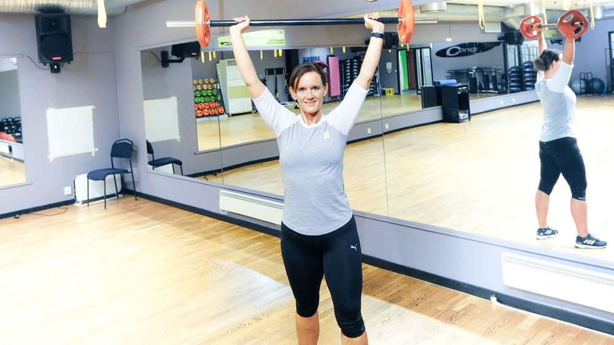
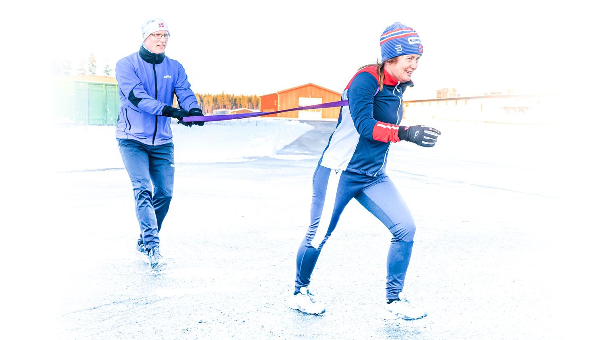
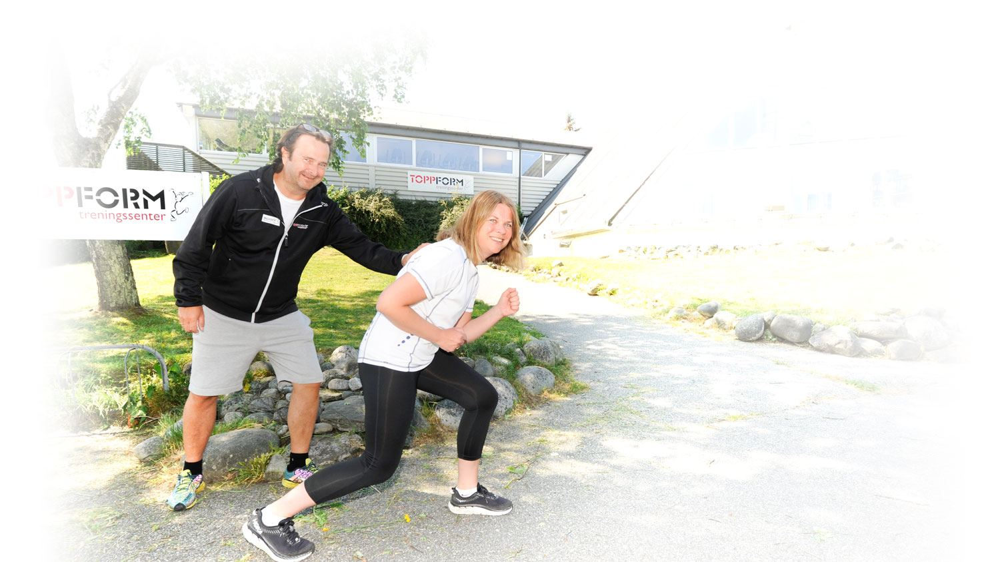
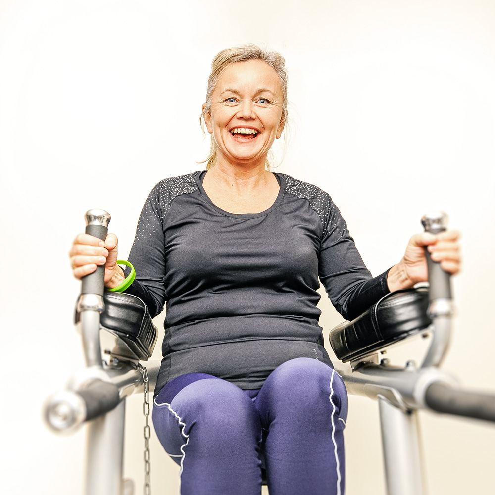

Forside / Referanser
Ryggraden i EasyLife
«Selve ryggraden i EasyLife-systemet er våre fornøyde referanser!» Slik beskriver EasyLife det selv. Her er hva det betyr i praksis – og hvordan du kan lese flere.
Hvorfor referansene betyr noe
Vektreduksjon er et følsomt tema. De fleste som vurderer et program, vil vite at noen andre faktisk har fått det til – og at de har fått det til med en hverdag som ligner deres egen.
EasyLife har samlet referanser fra deltakere over hele landet, fra sentre, fra fysikalske institutt og fra grupper utendørs. Referansene er deltakernes egne beskrivelser av hvordan programmet har virket for dem.
Slik leser du dem
- Se etter deltakere som startet der du er nå – ikke bare de som gikk ned mest
- Legg merke til hva de sier om oppfølgingen, ikke bare om vekten
- Spør senteret ditt om de kan sette deg i kontakt med en tidligere deltaker
Vi har ikke gjengitt enkeltpersoners historier her, fordi de tilhører dem. Du finner referansene på EasyLifes egen nettside, og på senteret der du melder deg på.
Les referanser hos EasyLifeFire steder å møte folk som har gjort det
På senteret
Deltakere som har fullført et program på et av sentrene i landet.
Fysikalske institutt
Referanser fra deltakere som har fulgt programmet hos en fysioterapeut.
Utendørsgruppene
Deltakere i EasyLife UTE, som har trent og hatt teori ute.
Digitalt
Deltakere i EasyLife online, som har fulgt opplegget på nett.
Slik ser ukene ut
Trening inne, turer ute – programmet foregår der du er.




Vil du høre fra en deltaker?
Send oss en henvendelse, så formidler vi kontakt med et senter i ditt område som kan vise til referanser.